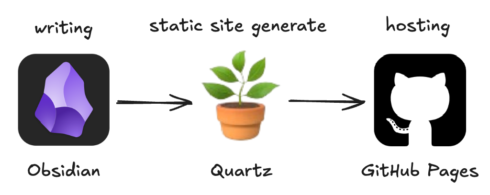
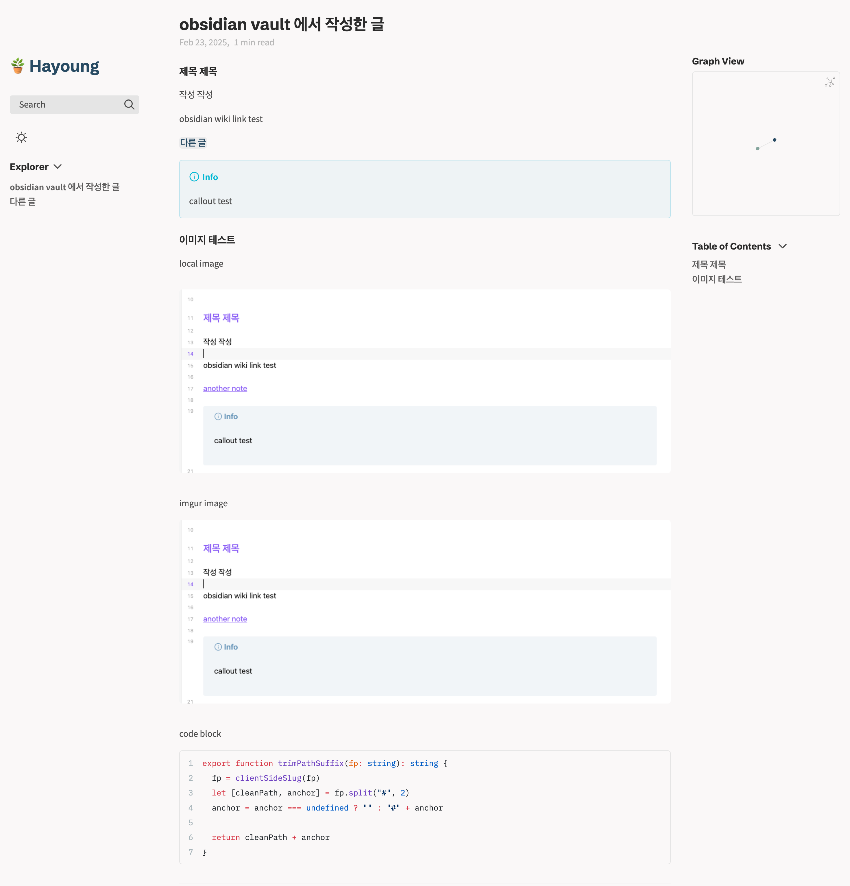
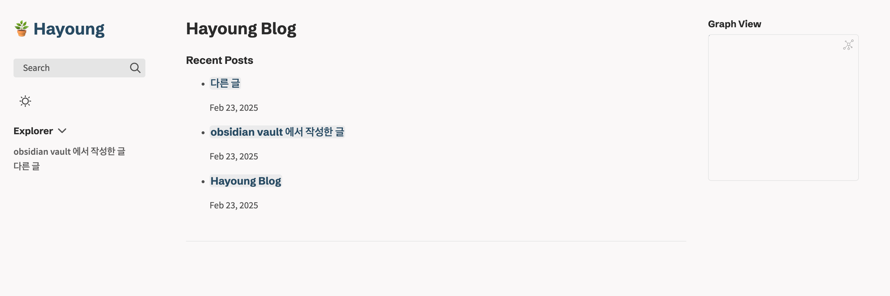

어떤 블로그를 만들고 싶을까
만들어야지 만들어야지 생각만 하다 드디어 블로그를 만들었다.
블로그를 만들게 된다면 wiki 형식으로 만들지 사람들과 공유하고 싶은 주제에 대한 형식으로 만들지 고민을 많이 했다.
지식 관리 도구로 Obsidian 을 사용하고 있는데 고민 끝에 일반적인 내용은 Obsidian vault 에 기록하고, 공유 하고 싶은 내용을 블로그로 포스팅 하도록 결정했다.
아마 개발과 비개발 구분하지 않고 글을 작성해서 올릴 예정이다.
블로그 플랫폼 비교
Github 블로그를 만들어 보고 싶은 생각이 있어서 Tistory, Velog, Medium 등과 같이 자체 플랫폼이 있는 곳은 후보에서 제외했다.
(그래서 사실상 SSG 비교..)
Docusaurus
사내 위키를 만들 곳으로 데모 정도까지 만들어보기도 했고, 개인적으로 팬(?)인 haril 님이 만든 obsidian 플러그인 o2가 있기 때문에 사용하고 싶어서 가장 먼저 고려했다.
그래서인지 Jekyll, Gatsby, Hugo 등은 굳이 선택지에서 제외했다.
- Hugo 는 꽤 괜찮은 것 같기도..?
블로그 뿐만 아니라 문서를 작성하기에도 매력적으로 느껴졌지만 이왕이면 obsidian 의 그래프 뷰나 위키 링크를 그대로 사용하고 싶었기 때문에 아쉽게도 패스했다.
참고 자료도 많고 SEO 나 통계 등 좀 더 블로그에 어울리는 기능이 필요하면 언젠가 이사 가보고 싶다.
Ghost
유료이지만 자체 호스팅을 하면 무료.
개인보다는 단체나 기업에 어울리는 것 같기도 하다.
유료 요금제를 사용할 경우 뉴스레터나 멤버쉽 기능도 있기 떄문에 좀 더 전문적으로 양질의 컨텐츠를 생산할 수 있는 능력이 되면 써도 좋을 것 같다.
Quartz
Obsidian vault 를 publish 할 수 있도록 해주는 static site generator
비슷하게 Digital Garden도 있지만 Quartz 의 철학 글을 보고 최종적으로 결정했다.
사실 공식 문서가 좀 더 깔끔하고 이뻤다
Quartz was originally designed as a tool to publish Obsidian vaults as websites.
현재는 범위가 많이 확장되었지만, Quartz는 원래 Obsidian을 publish 하기 위해 만들어졌기 때문에 옵시디언 맛(?) markdown 문법을 지원한다.
- Backlinks, callouts, wikilinks 등 기본적인 obsidian의 기능도 제공하고 플러그인을 통해 추가 기능도 제공한다.
- Obsidian - 2023 Gems of the year winners에 선정되기도 했다
블로그에 특화된 도구가 아니어서 아쉬운 점도 있지만, Obsidian을 폭넓게 지원하기도 하고 꾸준히 업데이트도 되고 있었다.
Obsidian 에서의 노트 작성과 구분없이 사용할 수 있다는 점이 가장 좋았고, 블로그를 오래 운영하면서 글이 쌓이면 쌓일수록 그래프 뷰나 위키 링크를 통한 글들의 연결 관계가 더욱 의미 있어질 것 같다.
Obsidian + Quartz 로 블로그 만들기

Quartz 설치하기
git clone https://github.com/jackyzha0/quartz.git
cd quartz
npm i
npx quartz createGit repository 생성 및 GitHub Pages 연결하기
- repository 생성
gh repo create blog --public
- git remote origin 제거
git remote rm origin
- git remote origin 등록
git remote add origin git@github.com:khy07181/blog.git
- github pages hosting
블로그 글을 작성해서 푸시하면 Github Actions 를 통해 자동으로 배포되도록 quartz/.github/workflows 경로에 다음과 같이 deploy.yml 파일을 작성한다.
name: Deploy Quartz site to GitHub Pages
on:
push:
branches:
- v4
permissions:
contents: read
pages: write
id-token: write
concurrency:
group: "pages"
cancel-in-progress: false
jobs:
build:
runs-on: ubuntu-22.04
steps:
- uses: actions/checkout@v4
with:
fetch-depth: 0 # Fetch all history for git info
- uses: actions/setup-node@v4
with:
node-version: 22
- name: Install Dependencies
run: npm ci
- name: Build Quartz
run: npx quartz build
- name: Upload artifact
uses: actions/upload-pages-artifact@v3
with:
path: public
deploy:
needs: build
environment:
name: github-pages
url: ${{ steps.deployment.outputs.page_url }}
runs-on: ubuntu-latest
steps:
- name: Deploy to GitHub Pages
id: deployment
uses: actions/deploy-pages@v4컨텐츠 경로 변경
Quartz 에서 기본적으로 글은 /content 경로 안에 두어야 한다.
git submodule 을 사용해 하나의 공간에서 관리할 수도 있지만, vault 경로에 Quartz 설정 관련 파일들이 추가되는 것이 마음에 들지 않기도 했고 Obsidian + git 과 Quartz + git 을 함께 관리하기에는 복잡해 보였다.
Info
git submodule 을 사용해 관리를 하고 싶다면 참고할 만한 글
Obsidian vault 와 blog content 를 분리해서 관리하고 싶지만 글은 한 곳에서만 작성하고 싶어서 심볼릭 링크를 사용해 quartz 의 content 경로를 vault 에 있는 blog/content 경로에서 관리하도록 설정했다.
ln -s ~/Library/Mobile\ Documents/iCloud~md~obsidian/Documents/vault/blog/content ~/dev/personal/blog/content
글을 작성하고 npx quartz build --serve 명령어를 통해 온라인에 게시될 내용을 localhost:8080 에서 미리 확인할 수 있다.
npx quartz sync 명령어로 작업 내역을 저장소에 반영하고 블로그에 글을 게시할 수 있다.

댓글 기능 구현
giscus 설정 을 통해 얻은 값들을 quartz.layout.ts 의 sharedPageComponents 에 작성하면 간단히 적용할 수 있다.
afterBody: [
Component.Comments({
provider: 'giscus',
options: {
repo: 'khy07181/blog',
repoId: 'R_kgDON9-dEA',
category: 'Announcements',
categoryId: 'DIC_kwDON9-dEM4CnOik',
}
}),
],최근 글 목록 기능 구현
Quartz 에는 index.md 가 메인 페이지 역할을 한다.
메인 페이지에는 최근 글 목록이 나오는 것이 좋을 것 같아 찾아보니 기본적으로 Recent Notes 를 보여주는 컴포넌트가 존재했다.
그러나 해당 컴포넌트를 적용하면 모든 글에서 최근 글 목록이 표시되기 때문에 Home 역할을 하는 index.md 파일에만 적용될 수 있도록 컴포넌트를 작성하고, default 레이아웃에 적용하면 전체 글 중 index.md 파일에 대해서만 최근 글 목록이 표현된다.
- 이외에도 원하는 컴포넌트 구성이 있다면 커스텀하게 추가 가능하다
// RecentNotesForIndex.tsx
import { QuartzComponent, QuartzComponentProps } from "./types"
import RecentNotes from "./RecentNotes"
const RecentNotesForIndex: QuartzComponent = ({ fileData, ...props }: QuartzComponentProps) => {
return fileData.slug === "index" ? (
<RecentNotes
title="Recent Posts"
limit={5}
showTags={true}
linkToMore="/all-posts"
{...props}
/>
) : null
}
export default RecentNotesForIndex// quartz.layout.ts
import RecentNotesForIndex from "./quartz/components/RecnetNotesForIndex"
export const defaultContentPageLayout: PageLayout = {
beforeBody: [
Component.Breadcrumbs(),
Component.ArticleTitle(),
Component.ContentMeta(),
Component.TagList(),
RecentNotesForIndex,
],
left: [
Component.PageTitle(),
Component.MobileOnly(Component.Spacer()),
Component.Search(),
Component.Darkmode(),
Component.Explorer(),
],
right: [
Component.Graph(),
Component.DesktopOnly(Component.TableOfContents()),
Component.Backlinks(),
],
}
후기
고민 3주, 구현 3시간, 글 작성 3시간
- 고민하는 시간을 줄이자.